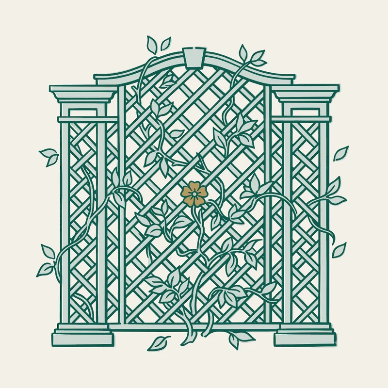

Case 01Partner Ecosystem PlatformUSLI, A Berkshire Hathaway CompanyA partner portal stewarded for fifteen years — across three roles.
Problem: 200,000+ agents, brokers, and policyholders needed curated business resources the company couldn't produce alone — and third-party content without governance is a brand risk.
Decision: Design and launch the Business Resource Center as a managed ecosystem — owning vendor and partner curation, contract negotiation, content governance, SEO, and the integrated marketing strategy around it — then expand it through every role that followed: a Spanish-language edition, a WordPress relaunch, a Canadian expansion.
Outcome: A durable marketing asset that outlasted campaigns, teams, and platform migrations — the structural blueprint for alliance and ecosystem marketing.
175%U.S. usage growth / 18 mo
40%Vendor & resource engagement lift
2Countries, two languages